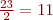
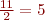
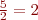
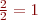

Introducció a les xarxes
Les persones sempre han tingut la necessitat de comunicar-se i intercanviar informació, però la distància i el temps han estat uns dels inconvenients principals: les xarxes entre ordinadors han resolt aquests contratemps.
Els ordinadors són màquines especialitzades a processar informació d’acord amb unes instruccions preestablertes, però no sempre la informació es produeix o s’emmagatzema al lloc on es processa i, per tant, caldrà transportar les dades des del seu origen fins a la seva destinació, amb la qual cosa es crea una comunicació.
La missió fonamental de les xarxes és que la informació es pugui transmetre entre elements terminals, és a dir, entre un sistema anomenat transmissor i que posseeix o genera la informació, i un altre sistema anomenat receptor que requereix aquesta informació.
La transmissió d’aquesta informació depèn fonamentalment de dos factors, del senyal que es transmet i que conté la informació i del medi per on s’efectua la transmissió. Aquesta transmissió d’informació entre ordinadors és el que crea les xarxes d’ordinadors.
Actualment, les xarxes d’ordinadors és un concepte quotidià; en tan sols uns anys les xarxes d’ordinadors han passat de ser quelcom inhabitual i desconegut al primer pla de la nostra realitat. Segurament, l’actor principal d’aquesta realitat és Internet i les seves aplicacions sobre ella (correu electrònic, xarxes socials, comunicació, etc.). Aquests termes tenen, i tindran, un interès creixent en un futur pròxim. Per tant el món de les xarxes és cada cop més habitual: és un fet normal que la majoria tingui connexió a Internet a casa (el que implica tenir una petita xarxa domèstica) i cada cop és més estrany trobar-nos davant d’un ordinador “aïllat”, sense connexió a cap xarxa.
Ús d'Internet a Espanya el 2010
A continuació podeu observar un llistat amb diferents dades que us poden donar una idea de l’ús d’Internet a Espanya:
- El 57,4% de les llars disposen de connexió de banda ampla a Internet, un 11,6% més que el 2009.
- El nombre d’internautes creix un 7,1% en el darrer any i supera els 22,2 milions de persones.
- El 17,4% de la població utilitza el comerç electrònic.
- En el 68,7% de les llars amb almenys un membre de 16 a 74 anys disposa d’ordinador en l’any 2010. Aquest percentatge supera en 2,4 punts el del 2009.
Font: INE-Instituto Nacional de Estadística
Una explicació de tot això és també que els preus de la informàtica han patit des de fa uns anys una disminució exponencial:
- El preu de l’espai en disc (euros/MB; megabyte) es redueix a la meitat aproximadament cada 4,5 anys.
- La potència del processador (euros/MIPS; million instructions per second, milions d’instruccions per segon) cada 2 o 3 anys.
- La memòria RAM (random access memory, memòria d’accés aleatori) (euros/MB) cada 1,8 anys.
- El preu de la transmissió de dades (mesurades en euros/Mb/s/km) es redueix a la meitat cada 1,5 anys, o sigui té una disminució encara més gran que les tecnologies informàtiques.
Com a resultat d’aquest ràpid progrés tecnològic, aquestes àrees estan convergent d’una manera accelerada i les diferències entre la recollida, transport, emmagatzematge i processament de la informació estan desapareixent ràpidament. Per exemple, hi ha organitzacions amb centenars d’oficines disperses geogràficament. Aquestes esperen de manera rutinària poder examinar l’estat actual, fins i tot de la seva sucursal més llunyana, amb tan sols prémer un botó. Això els fa trencar amb la “tirania de la geografia”.
Factors d'expansió
Hi ha una sèrie de factors, com per exemple el tecnològic, que han fet expandir l’interès i treball en les xarxes d’ordinadors. En aquest cas us centrareu en l’ús que es fa de les xarxes en diferents àrees:
- Negoci
- Domèstic
- Usuaris mòbils.
Negoci
Qualsevol empresa té els seus ordinadors connectats en xarxa, de manera local creant-hi una xarxa local (LAN, en anglès, local area network, xarxes d’àrea local) i fins i tot interconnectant-les amb altres xarxes a través d’enllaços telefònics (anomenades WAN, en anglès, wide area network, xarxes d’àrea estesa). Les motivacions de les empreses per usar xarxes són les següents:
- Compartir recursos físics/dispositius: compartir una impressora per tota l’oficina.
- Compartir informació (model client/servidor): tenir centralitzada la informació en un disc compartit.
- Trencar els obstacles de la separació geogràfica: una empresa multinacional per comunicar-se amb les seves seus.
- Comunicació entre empleats: textual, videoconferència, comerç electrònic, fer comandes per evitar estalviar en estoc; comunicació immediata.
- Treball cooperatiu: treballar en documents, videoconferència.
Domèstic
El grau d’incidència que tenen les xarxes en el món domèstic és molt gran, per tant és una àrea força important. A petita escala les motivacions són les mateixes que les de les empreses:
- Accedir a informació remota.
- Comunicació: per exemple hi ha la missatgeria instantània, comunicació P2P (peer to peer, d’igual a igual).
- Formació a distància (en anglès, e-learning): un exemple d’això és l’IOC (Institut Obert de Catalunya).
- Comerç electrònic: cada cop hi ha més compres que es fan només per Internet (entrades per espectacles, bitllets d’avió, etc.)
- Oci interactiu: jugar en línia, serveis audiovisuals (a demanda per veure televisió o cinema).
Usuaris mòbils
Avui en dia l’ús del mòbil és el que més creix, ja que cada cop hi ha al mercat més telèfons amb accés a Internet, per tant és on es centren més els factors de creixement tecnològic i de possibles aplicacions. Les motivacions dels usuaris mòbils són similars a les dels domèstics però en aquest cas s’afegeixen noves possibilitats que donen la geolocalització (conèixer la posició geogràfica de l’usuari en aquell moment) que permet donar serveis a l’usuari depenent del lloc on es trobi.
Components d'una xarxa
Una xarxa d’ordinadors està formada per targetes, cables o ones (medis) que uneixen els ordinadors amb altres elements o els elements intermedis de maquinari actius que formen part de la comunicació, com ara: repetidors, amplificadors, concentradors, commutadors i altres elements que filtren, amplifiquen, restableixen o encaminen els senyals de transmissió de dades. Però també té elements que no són físics com el programari implicat: els sistemes operatius o aplicacions que usen la xarxa (lectors de correus, navegadors web, etc.).
S’anomena components d’una xarxa tots aquells elements que formen part de la comunicació, en la transmissió de la informació, entre els ordinadors.
Per exemple en una petita xarxa domèstica hi ha com a components de la xarxa: la targeta de l’ordinador, el cable que uneix l’ordinador amb l’encaminador (router) que uneix la meva xarxa amb Internet i a part d’aquests components físics hi ha el programari. Si per exemple s’usa la xarxa per navegar per Internet hi ha el sistema operatiu i el navegador que s’usi (Firefox…).
Medis de transmissió
En una xarxa d’ordinadors contínuament s’està intercanviant informació entre ordinadors, aquesta informació es transmet a través de senyals elèctriques que poden ser una variació de corrent elèctric o de tensió elèctrica. Per tant aquests senyals transporten les dades entre un emissor i un receptor, propagant-se a través d’un medi de transmissió.
El medi de transmissió és el suport físic a través del qual l’emissor i el receptor es poden comunicar.
Els medis de transmissió es poden classificar com a guiats i no guiats.
Els medis guiats són els medis per on els senyals que transporten la informació circulen confinats dins el medi, per exemple els senyals elèctrics en els cables o els senyals òptics en la fibra òptica. Contràriament, els medis no guiats són el medis en què els senyals es propaguen sense estar limitats, per exemple les ones electromagnètiques de ràdio en la propagació per l’aire o pel buit, en les xarxes sense fil.
El terme enllaç directe fa referència al camí de transmissió entre dos dispositius, la transmissió s’efectua directament del transmissor al receptor sense cap dispositiu intermedi, excepte dispositius amplificadors o repetidors, que són dispositius que tenen la capacitat de regenerar els senyals que poden arribar malmesos a causa de la distància.
Medis guiats
Es basen en la necessitat d’algun element per transmetre els senyals, i necessiten d’un medi físic per on propagar les ones electromagnètiques. De medis guiats, n’hi ha dels tipus següents:
Ona electromagnètica
L’ona electromagnètica és la forma de propagació de la radiació electromagnètica a través de l’espai. Una ona electromagnètica habitualment es produeix per un corrent elèctric altern.
- Sistema de cablejat metàl·lic: El cable metàl·lic és el medi de transmissió més utilitzat quan es tracta de distàncies no gaire grans o es necessiten capacitats no gaire elevades. La informació es transmet en forma d’ones electromagnètiques. Normalment aquests cables formats per elements metàl·lics són de coure degut al seu cost i a la seva bona conductivitat.
- Fibra òptica: La fibra òptica és un medi de transmissió usat habitualment quan es necessita cobrir distàncies més grans en xarxes o quan es requereix de capacitats més elevades. Es tracta d’un fil molt fi de material transparent, vidre o materials plàstics, pel qual la informació es transmet a través de polsos lluminosos.
S’usa molt en telecomunicacions, ja que permet enviar gran quantitat de dades a una gran distància, amb velocitats similars a les de ràdio o cable, també per la seva alta fiabilitat.
Medis no guiats
Es basen en la transmissió d’ones electromagnètiques que recorren el buit de l’espai exterior i l’aire. Per tant no és necessari un medi físic; en conseqüència, fa que el disseny d’una xarxa sigui molt versàtil. És la solució òptima per quan no és possible l’ús de cable ja sigui per dificultats geogràfiques o per necessitat d’una connexió mòbil.
Bluetooth és una especificació industrial que serveix per connectar sense fil els dispositius, que es poden dur a sobre, a una distància pròxima.
- Ones de ràdio: les ones de ràdio són fàcils de generar, poden viatjar distàncies llargues i penetrar edificis sense problemes, per això el seu ús està molt generalitzat en la comunicació, tant en interiors com en exteriors. Les ones de ràdio també son omnidireccionals, és a dir, viatgen per totes direccions a partir d’un origen, i per tant no és necessari que el transmissor i receptor estiguin alineats. Té problemes d’interferències. S’usen, per exemple, en les xarxes domèstiques sense fil (wifi o wireless fidelity, fidelitat sense fil).
- Ones infraroges: són ones per a distàncies curtes. L’infraroig és l’espectre que comprèn l’interval que va des de la llum visible fins a les microones. Els comandaments a distància de la televisió, o comunicar un portàtil amb els perifèrics, en són uns exemples.
- Microones: per la seva alta freqüència passen fàcilment a través de l’atmosfera amb menys interferència que altres freqüències més petites. També, l’espectre de les microones ofereix més ample de banda que altres de l’espectre radioelèctric. El seu ús es limita a zones a les quals no hi hagi gran quantitat d’obstacles, i la seva eficiència es veu afectada per les condicions meteorològiques. Un exemple seria la comunicació a través de Bluetooth.
Xarxa local sense fil
Degut a la idea de poder fer mòbils els terminals de xarxa fa que en aquests se’ls doti de sistemes receptors/emissors que utilitzen la tecnologia sense fils. Per tant les xarxes sense fils seran aquelles que s’usen en els medis no guiats. De xarxes sense fils, n’hi ha les següents:
- WLAN (wireless local area network, xarxa locals sense fils): és l’extensió de la LAN, la complementa ja que ara disposa d’una extensió de xarxa cablejada i l’altra part sense fils. Fins i tot alguna vegada substitueix totalment la LAN, tots els terminals tenen sistemes receptors/emissors sense fil. Ex: la xarxa domèstica per connectar-se a Internet on s’usen portàtils dotats de connexió sense fils.
- PAN (personal area network, xarxa d’àrea personal): tenen com a objectiu facilitar la comunicació entre terminals (fixos o mòbils) sense l’ús dels cables i els terminals es connecten directament entre iguals. Un exemple és la xarxa que es crea quan intercanvien fitxers entre dos mòbils per Bluetooth.
- WMAN (wireless metropolitan area network, xarxa d’àrea metropolitana sense fil) sorgeixen per superar les mancances de les WLAN ja que tenen més cobertura i amplada de banda. Usen com a medi les ones microones. Per exemple, unir sota una mateixa xarxa diferents oficines consecutives.
ANSI i UIT-T
Són dos organismes sense ànim de lucre que regulen el desenvolupament d’estàndards.
En el cas d’UIT (en anglès International Telecommunication Union, Unió Internacional de Telecomunicacions) és l’organisme especialitzat de les Nacions Unides encarregat de regular les telecomunicacions, a nivell internacional, entre les diferents administracions i empreses operadores. En concret l’UIT-T és el sector d’aquest organisme que normalitza les telecomunicacions.
Pel que fa a ANSI (en anglès American National Standards Institute, Institut Nacional Nord-americà d’Estàndards) supervisa el desenvolupament d’estàndards per a productes, serveis, processos i sistemes en els Estats Units, per garantir que els productes desenvolupats en aquest país puguin usar-se a tot el món.
Tipus de transmissió
El nombre de dispositius que comparteixen el medi de transmissió, classifica als medis guiats en dos tipus:
- Punt a punt quan el medi guiat proporciona un enllaç directe entre els dos únics dispositius que comparteixen el medi.
- Multipunt quan el medi guiat és compartit per més d’un dispositiu.
Símplex i dúplex
Les definicions UIT-T (Europa) i ANSI (Estats Units) dels termes símplex i dúplex són diferents. El terme símplex correspon al terme semidúplex (half-duplex) i el terme dúplex correspon al terme ANSI full-duplex.
Depenent de les característiques dels medis, aquesta transmissió pot ser simultània o no entre els dos dispositius. Es diu que la transmissió és símplex quan els senyals només es poden transmetre en un sol sentit simultàniament i es diu que la transmissió és dúplex quan els senyals poden ser transmesos en tots dos sentits simultàniament.
Hoste
Els usuaris per accedir a la xarxa usen els ordinadors. Hoste és un nom genèric per a la majoria dels dispositius d’usuari final de la xarxa. Per tant, també es poden conèixer com els terminals de xarxa.
En informàtica, s’utilitza hoste (en anglès, host) per referir-se als ordinadors connectats a una xarxa, que proveeixen i utilitzen serveis de la xarxa mateixa.
Els usuaris han d’usar hostes per tenir accés a la xarxa. Hoste és un nom genèric per la majoria dels dispositius d’usuari final de la xarxa. Per tant també es poden conèixer com els terminals de xarxa. En general, els hostes són ordinadors monousuari o multiusuari que ofereixen serveis de transferència d’arxius, connexió remota, servidors de serveis, etc. Els hostes envien i rebran tràfic dels usuaris. Un hoste ha de tenir una adreça IP de xarxa. Els ordinadors personals i les impressores connectades a la xarxa són alguns exemples d’hostes.
L'ordinador personal PC
L’ordinador personal PC (personal computer) és un microordinador dissenyat per ser usat per una sola persona a la vegada.
Internament, un ordinador personal està compost per un conjunt de dispositius electrònics, cadascun dels quals fa la seva part de la feina: la placa base, el processador, la memòria principal, els busos, els dispositius d’emmagatzematge, els dispositius d’entrada i sortida, i les targetes d’expansió. Pel que fa a aquests dispositius els que tenen incidència en les tasques d’ús de la xarxa són:
- targetes d’expansió
- instal·lació de la targeta de xarxa
- mòdems.
Les targetes d'expansió
Un ordinador per si sol no es pot connectar a una xarxa, per fer-ho necessita que se li afegeixi un nou maquinari que li permeti connectar-se a la xarxa.
Les targetes d’expansió s’insereixen en els connectors de la placa base i permeten afegir o modificar a l’ordinador una sèrie de prestacions addicionals a les del disseny original.
Algunes targetes d’expansió són, per exemple, les següents:
- La targeta gràfica, que és l’encarregada de gestionar i produir les imatges que es veuen pel monitor.
- La targeta de so, que és l’encarregada de produir senyals de so que es poden escoltar per uns auriculars o bé per uns altaveus, i de gestionar i transformar els senyals de so procedents, per exemple, d’un micròfon en senyals digitals que pugui utilitzar l’ordinador.
- La interfície de xarxa, que permet a l’ordinador comunicar-se amb altres ordinadors a través de la xarxa.
NIC
NIC (en anglès network interface card, targeta d’interfície de xarxa). Cada targeta de xarxa NIC té un número d’identificació únic, MAC (en anglès media access control, control d’accés al medi), que la distingeix en la xarxa de qualsevol altra i que es considera la seva adreça física.
Una interfície de xarxa és el dispositiu electrònic que comunica l’ordinador amb el medi de xarxa.
Físicament, la interfície de xarxa és una targeta d’expansió inserida dins l’ordinador o bé integrada en la placa mare amb un connector extern o més d’un, per on es connecta el cable de xarxa.
Des del punt de vista conceptual, la interfície de xarxa, també anomenada targeta de xarxa, adaptador de xarxa o NIC (figura), permet la comunicació de l’ordinador amb la xarxa i, alhora, compartir recursos entre diferents equips (discs durs, CD-ROM -en anglès compact disc read-only memory, disc compacte de només lectura de memòria-, impressora, etc.).
Hi ha diversos tipus d’adaptadors en funció del tipus de cablejat o arquitectura que s’utilitzi en la xarxa (coaxial fi, coaxial gruixut, anell de testimoni (token ring), etc.), però actualment el més comú és l’Ethernet, que utilitza un connector RJ-45 (RJ Registered jack).
Instal·lació de la targeta de xarxa
En la secció “Annexos” del web d’aquest mòdul trobareu informació sobre la instal·lació i configuració d’una targeta de xarxa.
Alguns models d’ordinador no porten incorporada de sèrie la interfície de xarxa, si es vol que aquest ordinador pugui estar connectat a una xarxa cal instal·lar una targeta de xarxa i posteriorment configurar-la. També pot passar que es vulgui utilitzar l’ordinador connectat simultàniament a més d’una xarxa, per a la qual cosa cal que l’ordinador disposi de tantes interfícies de xarxa com xarxes es vulgui connectar.
Mòdems
El terme mòdem ve de la contracció de dues paraules: Modulador Demodulador.
Moltes vegades la informació s’ha de transmetre per diferents tipus de medis que admeten diferents tipus de senyals digitals o analògics, o amb diferents tipus de modulació. Un mòdem és un aparell electrònic capaç de convertir un senyal d’un tipus (per exemple, un senyal digital) en un altre d’analògic que pugui ser transmès per un medi dissenyat per a senyals analògics, i a l’inrevés.
Dispositius
Per tal d’interconnectar dos ordinadors o més per constituir una xarxa, en la majoria dels casos, no n’hi ha prou que els ordinadors disposin d’una interfície i que els connecti un medi adequat, calen a més altres dispositius que fan d’enllaç entre les diferents parts, ja sigui distribuint, amplificant i regenerant els senyals, o bé encaminant les comunicacions cap a la seva destinació.
Són dispositius de xarxa els següents:
- Repetidors
- Concentradors
- Ponts
- Commutadors
- Encaminadors
Repetidors
Un repetidor és un dispositiu que quan els senyals abandonen un terminal són nets i la informació que contenen és fàcilment identificable. Però en desplaçar-se pel medi, degut a les característiques i l’ambient per on transcorre el medi, el senyal es debilita i es deteriora a causa de la distància i la influència de senyals pertorbadors ambientals. La missió fonamental d’un repetidor és tornar el senyal present en una de les dues interfícies als seus valors primitius, amplificant i reconstruint el senyal original, i transmetre’l per l’altra interfície. A la figura podeu veure un exemple d’un símbol d’un repetidor.
Concentradors
Les característiques d’un concentrador (també anomenat HUB o repetidor multiport) són semblants a les d’un repetidor, però a diferència d’aquest disposa de múltiples interfícies, de tal manera que en cada una hi pot haver un dispositiu connectat. La seva missió fonamental és transmetre el senyal present en una de les interfícies per totes les altres interfícies, i tornar al mateix temps el senyal als seus valors primitius. Amb aquests dispositius es poden comunicar un conjunt de dispositius terminals entre ells i configurar una xarxa de grup de treball. A la figura podeu veure un exemple d’un símbol d’un concentrador.
Ponts
Un pont (en anglès bridge) és un dispositiu que s’utilitza per segmentar una xarxa local, de tal manera que el pont deixa passar la informació d’un segment a l’altre només si aquesta informació està destinada a un terminal d’aquest altre segment, això s’aconsegueix interpretant la part de la informació on hi ha consignada la destinació, i mantenint la informació necessària per saber quin terminal o quins terminals destinació hi ha connectats a cada interfície. A la figura podeu veure un exemple d’un símbol d’un pont.
Commutadors
Un commutador (en anglès switch) és un dispositiu semblant a un concentrador (HUB) que gestiona la comunicació entre diferents dispositius terminals, però que en lloc de retransmetre per totes les interfícies un senyal rebut per una d’elles, només la transmet per la interfície on hi ha el terminal destinació. Això s’aconsegueix, igual que en el cas del pont, interpretant la part de la informació on hi ha consignada la destinació, i mantenint la informació necessària per saber quin terminal o terminals destinació hi ha connectats a cada interfície. A la figura podeu veure un exemple d’un símbol d’un commutador.
Encaminadors
Un encaminador (en anglès router) és un dispositiu que permet interconnectar entre elles dues xarxes o més, dirigint la informació d’una xarxa a una altra xarxa des d’on es pugui accedir al dispositiu terminal destinació. Això s’aconsegueix interpretant la part de la informació on hi ha consignada l’adreça de xarxa del terminal destinació. Els encaminadors es comporten com si fossin commutadors entre xarxes a partir de les adreces de xarxa davant les adreces de dispositiu que usen els commutadors. A més, els encaminadors poden prendre decisions a propòsit de quin és el millor camí per a la distribució de dades per la xarxa. A la figura podeu veure un exemple d’un símbol d’un encaminador.
Programari
Les primeres xarxes de computadores es dissenyaren tenint el maquinari com a punt principal i el programari com a secundari. Això ja no funciona i actualment el programari de xarxes està altament estructurat.
El programari estarà estructurat per capes o nivells i implementarà els protocols, les regles que fixen com dur a terme correctament la comunicació entre els terminals d’una xarxa. Normalment aquest programari necessari per dur a terme la comunicació serà responsabilitat del sistema operatiu que també serà l’encarregat de configurar el sistema receptor/emissor (adaptador de xarxa) del terminal.
Per altra banda quan useu la xarxa, o algun dels seus serveis, fareu ús d’aplicacions que es comunicaran amb el sistema operatiu per fer les tasques de comunicar-se per la xarxa. Skype, per exemple, us permet fer trucades de veu a través d’una xarxa.
Classificació de les xarxes
Per tal de tenir una idea clara tant de les propietats com de les restriccions de les xarxes, cal fer-ne una classificació segons diferents aspectes:
- de funcionament i tecnologia
- el seu abast, és a dir, la seva extensió geogràfica
- la seva configuració física, és a dir, la topologia
- les relacions entre els seus components, o dit d’una altra manera, el seu ús.
Per l'abast
La localització geogràfica de la xarxa informàtica és un factor important a l’hora de dissenyar i de instal·lar correctament la xarxa d’ordinadors. La localització geogràfica té en compte la distància que hi ha entre els ordinadors o hostes que intercanviaran informació. Segons la extensió geogràfica es poden trobar diferents tipus de xarxes.
Segons l’abast de les xarxes, es poden distingir diferents tipus bàsics:
- Sistema (clúster): un clúster és una associació d’ordinadors interconnectats per mitjà d’una xarxa de connexions molt curtes que actuen com una sola unitat.
- LAN (local area network, xarxa d’àrea local): són xarxes que abasten una sala, un edifici o un conjunt d’edificis propers, amb unes distàncies de fins a pocs quilòmetres que comprenen una oficina, una empresa, una escola o una universitat, encaminades fonamentalment a compartir recursos i intercanviar informació.
- MAN (metropolitan area network, xarxa d’àrea metropolitana): és una versió en gran d’una xarxa d’àrea local. Comprèn un grup d’oficines properes o una ciutat. Una xarxa d’àrea metropolitana pot transportar veu, dades i possiblement senyal de televisió per cable. No acostuma a tenir elements intermedis de commutació, per tant el seu disseny és molt sovint força senzill.
- WAN (wide area network, xarxa d’àrea àmplia): s’estén per una àrea geogràfica estesa, un país o un continent, està composta per subxarxes d’ordinadors, terminals de xarxa i dispositius de commutació, interconnectats mitjançant línies de transmissió, anomenats també circuïts, canals o troncals. Els elements de commutació són ordinadors especialitzats que connecten dues o més línies de transmissió. Quan les dades arriben per la línia d’entrada l’element de commutació ha de triar la línia de sortida més adequada perquè les dades arribin a la subxarxa destinació. Aquests ordinadors reben el nom de nodes commutadors, sistemes intermedis o centrals de commutació de dades.
- Internet és una xarxa pública, descentralitzada i global d’ordinadors, formada per la interconnexió de diferents xarxes. De fet, és una xarxa de xarxes d’abast intercontinental, és a dir, planetària.
Configuració física (topologies)
Node
Un node és un dispositiu connectat a una xarxa, que o bé és un punt terminal o bé és un punt intermedi. Habitualment és un ordinador.
Les xarxes d’ordinadors poden tenir diferents tipus d’enllaç o cablejat que interconnecta els diferents nodes d’una xarxa, així com els camins utilitzats per a la transmissió de dades. Un node donat pot tenir enllaços a un dels altres nodes o a més d’un. Per tant hi ha diferents configuracions.
Es coneix com a topologia de xarxa la manera com estan connectats els diferents dispositius de xarxa. La topologia descriu la configuració de la xarxa.
La topologia de la xarxa es determina només per la configuració de les connexions entre nodes. Les distàncies entre nodes, les interconnexions físiques, les velocitats de transmissió i/o tipus de senyals no tenen importància a l’hora de definir la topologia. Si una xarxa utilitza diferents tipus de topologies s’anomena mixta.
Una topologia defineix com estan connectats els dispositius terminals de xarxa. és a dir, una topologia de xarxa descriu la disposició dels medis i els dispositius, i també les rutes o camins utilitzats per a les transmissions de dades.
Les xarxes poden tenir una topologia lògica i una topologia física. La topologia física fa referència a la disposició física dels dispositius i els medis de xarxa, mentre que la topologia lògica fa referència a quin és el model d’accés dels dispositius als medis per transmetre les dades. Els models següents són els models de topologies bàsics:
- Xarxa en bus (figura) és una topologia de xarxa en què els nodes comparteixen el medi i/o un dispositiu multipunt i que generalment utilitzen la tecnologia de difusió.
- Xarxa en anell (figura) és una topologia de xarxa en què cada node està connectat a una connexió punt a punt amb els dos nodes adjacents, fins a l’últim, que és connectat al primer. Així es forma un camí unidireccional o bidireccional tancat, de tal manera que la informació ha de circular en un sentit (o en l’altre) passant pels nodes intermedis per tal d’arribar de l’origen a la destinació. La topologia lògica emprada habitualment en xarxes en anell es pot simular en una topologia física en bus o en estrella.
- Xarxa en estrella (figura) és una topologia de xarxa en què cada node està connectat a un node central o bé a un commutador mitjançant enllaços punt a punt, que actua d’encaminador per transmetre els missatges entre els nodes de la xarxa. És a dir, tota la informació ha de passar forçosament per l’element central de l’estrella. Tot i que físicament les connexions de cada node amb l’element central són punt a punt, la majoria de xarxes d’aquest tipus utilitza la tecnologia de difusió.
- Xarxa en arbre o jeràrquica (figura) és una topologia de xarxa en què un node pot tenir altres nodes subordinats que, al seu torn, poden tenir altres nodes subordinats, i ell mateix pot ser subordinat d’un altre de superior. La comunicació en aquests cassos s’efectua d’un node cap a un dels seus subordinats que o bé és la destinació o bé és un node superior de la destinació, i a l’inrevés, la comunicació es pot fer cap a un node superior que o bé és la destinació o bé és un superior de la destinació.
- Xarxa en malla (figura) és una topologia de xarxa en què cada node està interconnectat amb un o més nodes mitjançant enllaços punt a punt, de tal manera que sempre hi ha almenys un camí per anar d’un node qualsevol a un altre. Els nodes disposen de programari i d’informació d’encaminament per tal de prendre decisions sobre quin és el millor camí per arribar al node destinació. Aquest camí pot dependre del cost dels salts que s’han de fer, de la velocitat de l’enllaç, de la saturació o de qualsevol altre paràmetre.
Aquests models de topologies són els models bàsics, en la realitat, però, hi ha models híbrids o estesos d’aquestes topologies, per exemple un ordinador que forma part d’una xarxa en malla pot formar part al mateix temps d’una xarxa en anell.
Tecnologia
Es pot fer una diferenciació per la tecnologia emprada per a la transmissió de dades i segons aquesta tecnologia es poden distingir dos tipus bàsics:
- Les xarxes de difusió. Els paquets que envia un dels terminals són rebuts per tots els altres. En rebre un paquet, un terminal verifica el camp del destinatari. Si el paquet és per al terminal, aquest el processa. Si està adreçat a un altre terminal, el descarta. Els sistemes de difusió tenen la possibilitat d’enviar un paquet de dades a totes les destinacions, això s’aconsegueix posant un codi especial en el camp d’adreça. Quan un terminal rep un paquet amb aquest codi, el processa. Aquesta mena d’operació, s’anomena difusió (broadcasting). També hi ha sistemes de difusió que comprenen la transmissió del mateix paquet només a un grup de terminals, aquesta operació es coneix com a multidifusió o difusió selectiva (multicast). Normalment aquest tipus de difusió s’aconsegueix afegint una marca especial a l’adreça del paquet, i a l’adreça s’hi posa la del grup de terminals.
- Les xarxes punt a punt. Moltes vegades, en les xarxes punt a punt, hi ha múltiples camins possibles per anar d’un ordinador origen a un ordinador destinació. Aquests ordinadors tenen un programari especial d’encaminament de paquets que tria el camí més adequat per transmetre el paquet. Tot i que hi ha moltes excepcions, per regla general, les xarxes petites usen la difusió, mentre que les xarxes més grans acostumen a emprar les connexions punt a punt.
Superordinador Mare Nostrum
Un exemple de xarxa sistema és la del superordinador Mare Nostrum del Centre de Supercomputació de Barcelona (BSC) al Campus Nord de la Universitat Politècnica de Catalunya.
La característica més important de les xarxes de difusió és que només tenen un canal de comunicació compartit per tots els terminals de la xarxa.
Les xarxes punt a punt consisteixen en moltes connexions entre parelles úniques d’ordinadors. Per anar d’un ordinador origen a un altre ordinador destinació, un paquet de dades cal que visiti una certa quantitat d’ordinadors intermedis.
Relacions
Un altre aspecte de les xarxes informàtiques és el tipus d’ús que en fan els ordinadors que hi estan connectats. Defineix, per tant, el sistema de comunicació entre ordinadors. Els tipus de relacions poden ser les següents:
- Client-servidor. La relació client-servidor és la que s’estableix entre dues entitats, el servidor, que és un sistema que proporciona serveis o recursos de qualsevol tipus (per exemple, dades o espai de disc) a un altre sistema, i el client, perquè en tregui un profit o un avantatge. El més habitual és que d’un servidor se’n aprofitin diversos clients.
- Entre iguals. Una relació d’igual a igual (peer to peer o P2P en anglès) defineix un sistema de comunicació que no té clients ni servidors fixos, sinó que cada un dels sistemes implicats es comporta alhora com a client i com a servidor del mateix tipus de servei o recurs. Aquest model contrasta amb el model client-servidor.
- Col·laborativa. Una relació col·laborativa és un sistema de comunicació que es dóna quan els diferents ordinadors que fan ús de la xarxa la utilitzen per intercanviar informació referida a una tasca comuna, a què cada un dels sistemes aporta les seves capacitats per obtenir un sistema coordinat que actua com una sola unitat.
Protocols, serveis i arquitectures
La comunicació entre dues màquines és vista com la divisió de tasques en capes. On cada capa proporciona serveis a la seva capa superior. Un mateix nivell d’una capa ha d’estar a les dues màquines que es connecten.
Un protocol de comunicacions és el conjunt de regles normalitzades per a la representació, senyalització, autenticació i detecció d’errors necessari per enviar informació mitjançant un canal de comunicació.
En aquest cas els protocols de comunicació per la comunicació per a xarxes de computadores tenen característiques destinades a assegurar un intercanvi de dades fiable a través d’un medi de comunicació imperfecte. Els protocols de comunicació segueixen certes normes per assegurar que el sistema funciona perfectament. Els protocols regulen la comunicació entre capes d’un mateix nivell a diferents hostes. Els aspectes que defineixen un protocol són:
- Sintaxi: estableix qüestions relacionades amb el format del blocs de dades.
- Semàntica: inclou informació de control per la coordinació i la gestió d’errors.
- Temporització: considera aspectes relatius a la sintonització de velocitats i seqüencialització.
L’arquitectura és la composició, estructura, manera com són encaixades i distribuïdes les diverses parts d’un organisme o d’una obra.
En el cas d’una xarxa d’ordinadors l’arquitectura estructura com serà la comunicació entre dos ordinadors, com seran les capes. N’hi ha:
- Arquitectura de protocols: és el conjunt de protocols de les capes en general.
- Arquitectura de protocols simple: el mòdul de transferència d’arxius conté tota la lògica i funcionalitats que són exclusives de l’aplicació. El mòdul de servei de comunicacions tracta d’assegurar que els dos ordinadors estiguin actius i preparats per a la transferència de dades. El mòdul d’accés a la xarxa és la lògica encarregada de tractar amb la xarxa.
Un servei és el conjunt d’eines i utilitats que són proveïts.
En el cas d’una xarxa d’ordinadors els serveis són aquelles eines, funcionalitats de què una capa dota a una altra.
Les persones generalment busquen enviar i rebre diferents tipus de missatges a través d’aplicacions informàtiques; aquestes aplicacions necessiten serveis per funcionar en la xarxa. Alguns d’aquests serveis engloben World Wide Web, correu electrònic, missatgeria instantània i telefonia IP. Els dispositius interconnectats a través de medis per proporcionar serveis han d’estar governats per regles o protocols. En la taula s’enumeren alguns serveis i un protocol vinculat de manera més directa amb aquests serveis. A mode d’exemple veieu la taula següent:
| Servei | Protocol (o regla) |
|---|---|
| World Wide Web (WWW) | HTTP (hypertext transport protocol, protocol per a la transferència d’hipertext) |
| SMTP (simple mail transport protocol, protocol per transportar correu electrònic simple) POP (post office protocol, protocol de recollida de correu electrònic) |
|
| Missatge instantani: Jabber, AIM (AOL instant messenger, missatgeria instantània de l’empresa AOL) | XMPP (extensible messaging and presence protocol, protocol lliure de missatgeria instantània) OSCAR (open system for communication in realtime, sistema obert per a la comunicació en temps real) |
| Telefonia IP (Internet protocol, protocol d’Internet) | SIP (session initiation protocol, protocol d’inici de sessió) |
Sistemes de numeració
Els sistemes digitals, com per exemple l’ordinador, usen lògica de dos estats representats per dos nivells de tensió elèctrica, un alt, H (High) i un altre baix, L (Low). Per abstracció, aquests estats se substitueixen per zeros i uns, cosa que facilita l’aplicació de la lògica i l’aritmètica binària. Si el nivell alt es representa per 1 i el baix per 0, es parla de lògica positiva i, en cas contrari, de lògica negativa.
Numeració ponderada
Un sistema de numeració permet representar i operar amb dades de significació numèrica, amb uns símbols i unes regles determinades.
Un sistema de numeració és el conjunt dels símbols i les normes que s’utilitzen per a la representació de la informació numèrica. En tot sistema de numeració hi ha una base del sistema que indica el nombre de símbols que es poden utilitzar en aquest sistema. La notació és: nombre(base.
Hi ha els sistemes de numeració decimal, binari, octal, hexadecimal, romà, etc. Els quatre primers es caracteritzen per tenir una base (nombre de dígits diferents: 10, 2, 8 i 16, respectivament), mentre que el sistema romà no té base i resulta més complicat utilitzar-lo tant amb nombres com en les operacions bàsiques (sumes, restes, multiplicacions i divisions).
Els sistemes de numeració que tenen una base tenen la característica de complir la notació posicional, és a dir, la posició de cada nombre hi dóna un valor o pes, on cada posició té una ponderació depenent de la base en què estigui representat el nombre.
Un sistema de numeració de base n significa que hi ha n dígits per escriure els nombres (des de 0 fins a n - 1) i que n unitats formen una unitat d’ordre superior. Així, en el sistema decimal (en base 10) els dígits per escriure van des del 0 fins al 9 (10 símbols). En comptar i quan s’arriba a 9 unitats, en afegir-ne 1 s’obté una unitat de segon ordre o desena, es posen les unitats a zero i es continua el cicle comptant per les unitats, quan es torna a arribar al 9 s’afegeix 1 a les desenes i es torna a posar les unitats a zero. Es continua així fins a arribar a 99 i en afegir-ne 1 es forma una nova desena, que unida a les nou que hi ha forma una centena. I així, successivament, per als milers, les desenes de miler…
En el sistema de numeració binari (base 2) totes les quantitats es representen utilitzant com a base dues xifres: zero i un (0 i 1). En binari dos unitats formen una unitat d’ordre superior. Comptant en aquest sistema 0, 1, en afegir 1 s’obté una unitat d’ordre superior i les unitats a 0, és a dir 0, 1, 10, es continua comptant 0, 1, 10, 11, en afegir una unitat les unitats passen a dos i formen una unitat de segon ordre, i com ja n’hi ha una, n’hi ha dues, amb la qual cosa es forma una unitat de tercer ordre o 100, i així successivament.
De decimal a binari
Molt sovint és necessari passar un valor que està representat en base 10 (decimal) a base 2 (binari). Per fer-ho es pot aplicar el mètode de les divisions successives.
Hi ha diversos mètodes per passar un nombre de base 10 a qualsevol altra base, un és el de les divisions successives per la base. Es tracta d’anar dividint el nombre i els quocients successius per la base fins que es troba un quocient més petit que el divisor (base). La unió de tots els residus obtinguts escrits en ordre invers i de l’últim quocient dóna el resultat buscat.
Exemple de passar de binari a decimal
Vegeu que .
Per a fer-ho es realitzen les divisions successives per la base 2:
- ,
- ,
- ,
- ,
Ara es posa l’últim quocient seguit de tots els residus (les restes) en ordre invers:
S’aconsegueix així el valor.
Hi ha també un altre mètode per fer-ho, és més ràpid que l’anterior, això si té com a requisit que s’ha de conèixer els diferents valors que té el resultat de la potència de dos. Es tracta de descomposar el nombre decimal en una suma de potències de dos, prenent l’exemple anterior
un cop descomposat en suma de potències de dos les potències presents es converteixen en 1 i les no presents en 0:
Recordeu que el 23 en binari és 10111.
Per realitzar aquest mètode es parteix de la potència de dos just menor al nombre que es vol passar a binari . Aquesta potència s’ha de sumar al valor que hi ha acumulat (inicialment 0), si el valor acumulat és menor o igual al nombre que es vol convertir aleshores la xifra és un 1 i aquest valor acumulat es; en cas contrari un 0 i el valor acumulat segueix amb el mateix valor que el pas acumulat. El següent pas és decrementar l’exponent en 1 i fer el mateix procés i així fins arribar a l’exponent 0. Aleshores totes les xifres obtingudes, en l’odre obtingut, conformen el nombre binari que es cercava.
Exemple de passar de decimal a binari
Vegeu un exemple per deixar-ho més clar, voleu passar 172 a binari, partireu de la potència de valor 128 i els passos del canvi de base són:
| Exponent | Valor acumulat | Acumulat < = 172 | Acumulat propagat | Xifra |
|---|---|---|---|---|
| 7 | Si | 128 | 1 | |
| 6 | No | 128 | 0 | |
| 5 | Si | 160 | 1 | |
| 4 | No | 160 | 0 | |
| 3 | Si | 168 | 1 | |
| 2 | Si | 172 | 1 | |
| 1 | No | 172 | 0 | |
| 0 | No | 172 | 0 |
Per tant com a resultat: 10101100.
De binari a decimal
Teorema fonamental de la numeració
El teorema fonamental de la numeració descriu que el valor decimal d’una quantitat expressada en altres sistemes de numeració està expressada segons el polinomi següent: … + X·B3+ X·B2+ X·B1+ X·B0. On el símbol B representa la base i X són els dígits del nombre.
Tot nombre es pot convertir a sistema decimal, utilitzant el teorema fonamental de la numeració.
Per passar de binari a decimal, cal aplicar la ponderació a cada un dels dígits que formen el valor binari.
Exemple de pas de decimal o binari
Vegeu que .
Ara es fa la suma . S’obté així el valor.